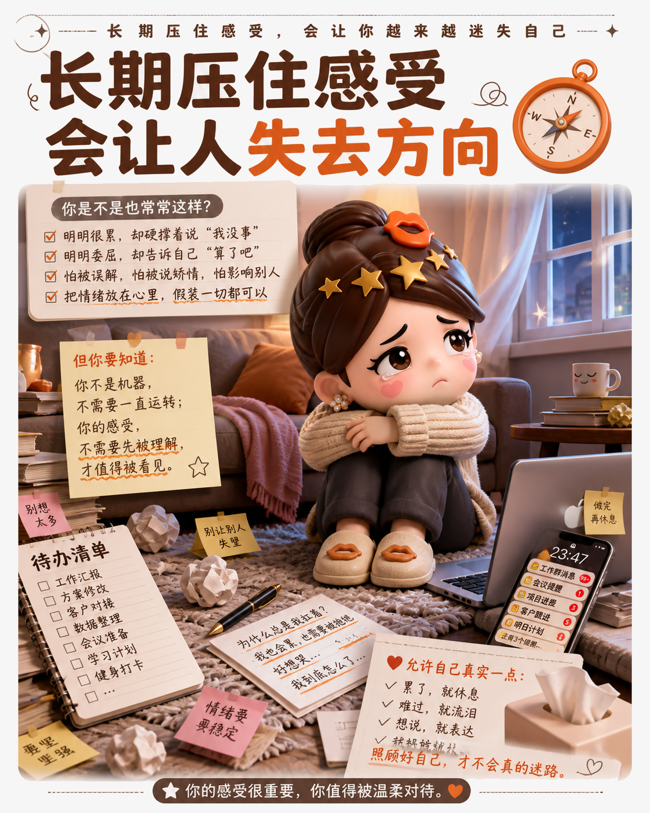

别替别人解释，先替自己说话
很多委屈不是没有答案，而是我们太快把答案让给了别人。
先辨认：你是真的愿意吗
我们常把一句拒绝改写成一串解释：他也不容易，这件事很重要，算了就这一次。理由越完整，心里的不舒服反而越难被看见。
停一下：感受不是需要纠正的错题
累了就是累了，受伤就是受伤。理解对方的处境，并不会自动取消自己的感受。真正值得追问的，不是我能不能继续扛，而是继续扛下去会不会把自己耗空。

换句话：把自己放回选择里
下次想答应之前，先给自己三秒：我想要什么，我能承受什么，我是否只是害怕让别人失望。然后把话说完整：我理解你，但今天需要休息；你很重要，但这件事我不能接。
这不是变得自私，而是把责任分配得更公平。善良可以保留，退让却不必自动发生。
转折之后，先听见自己的声音，选择才真正属于自己。